ZipHarbor · 原型与原生界面对照
2026-10-01 · 原型来自 Safari，原生界面来自 XCTest。iPhone 14 真机完成 21 项核心测试与完整 UI suite：12 项通过、1 项合成媒体用例跳过、0 失败；补充冲突 UI 在真机与模拟器各 1 项通过。此页用于检查结构、配色、层级和交互结果；真实内容、系统安全区、长标题排版、SF Symbols 和系统弹层会产生差异。
首页
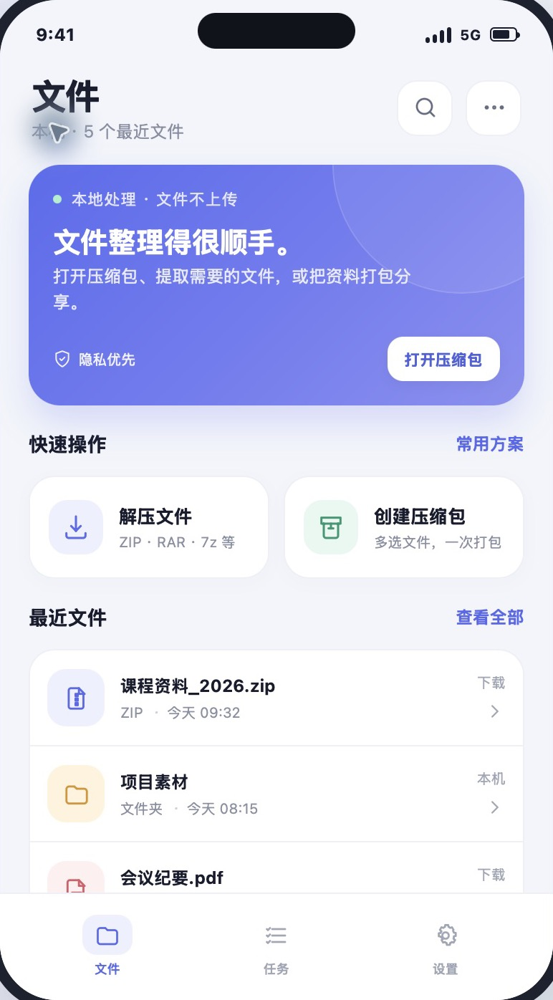
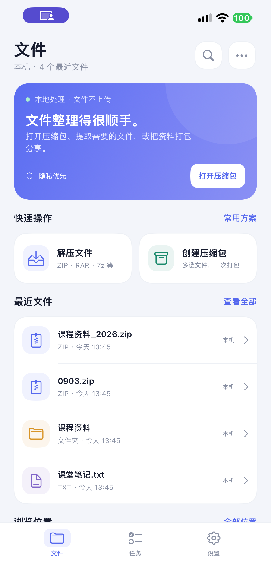
归档详情
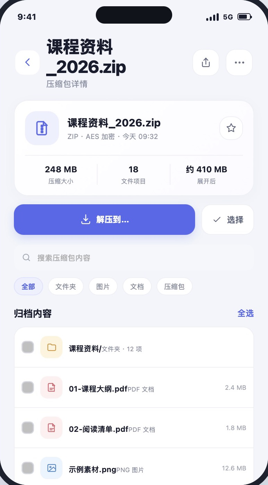
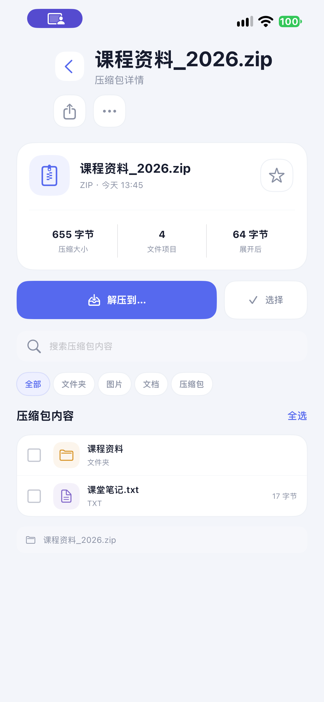
选择文件
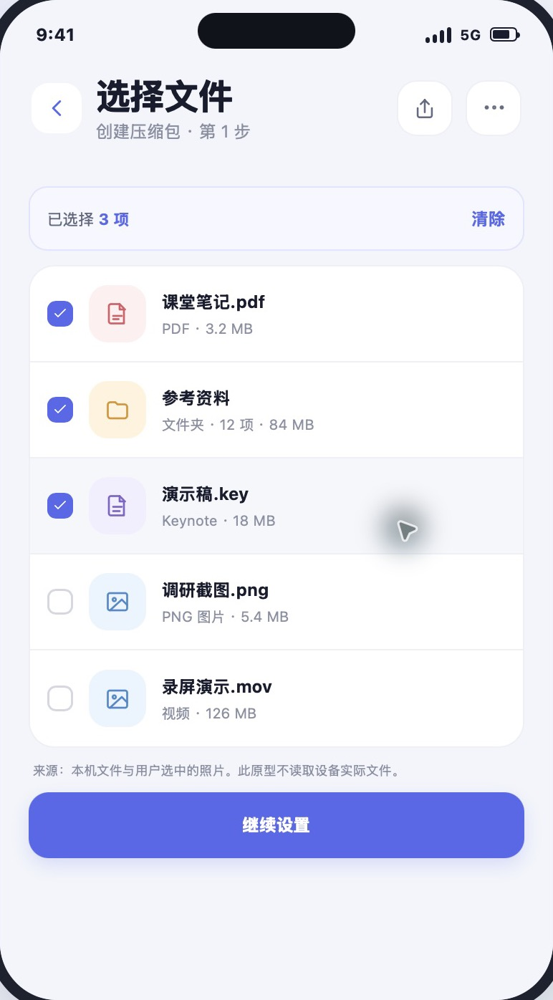
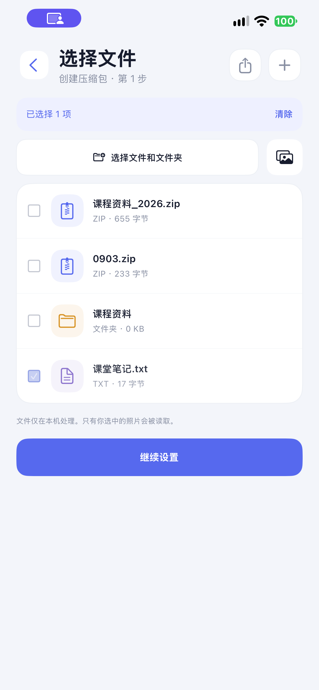
压缩设置
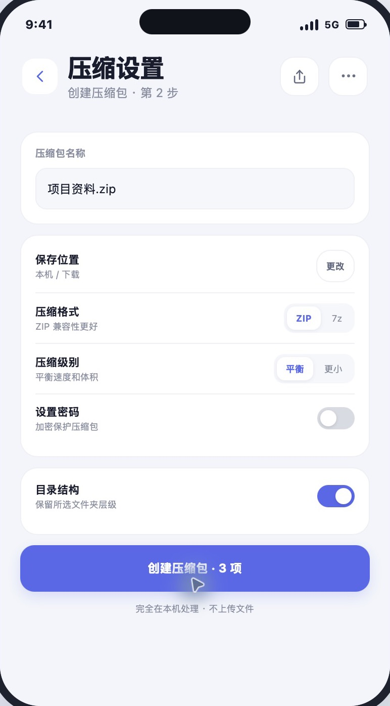
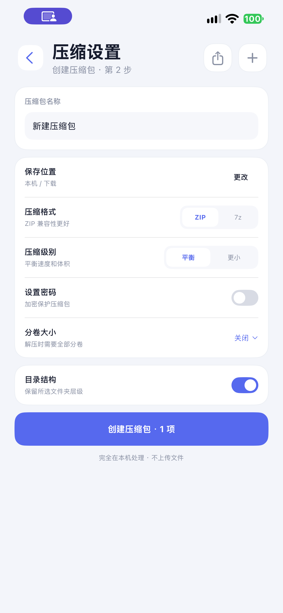
设置
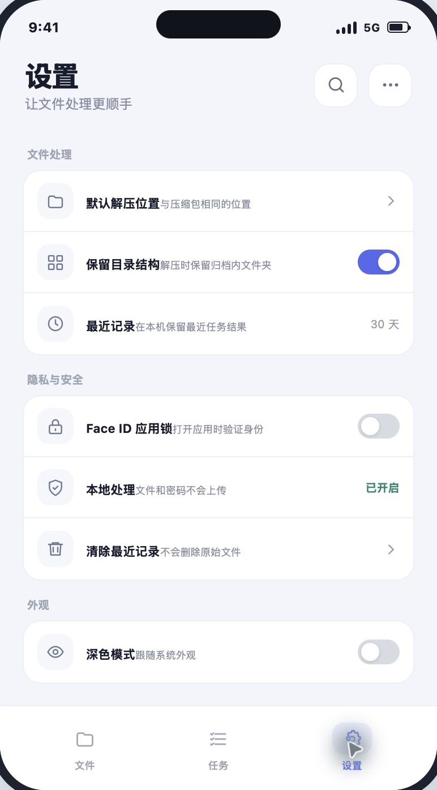
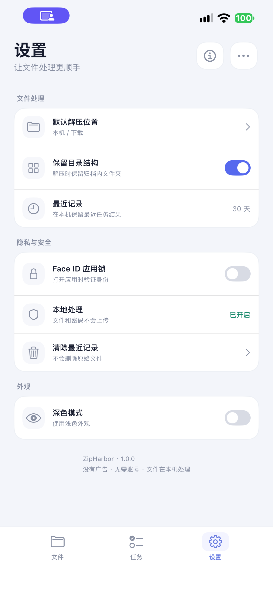
补充证据
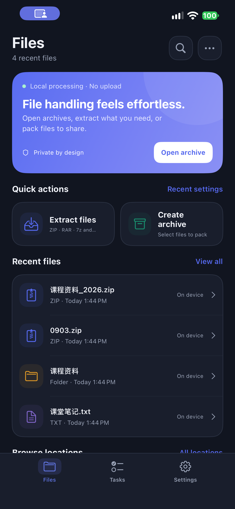
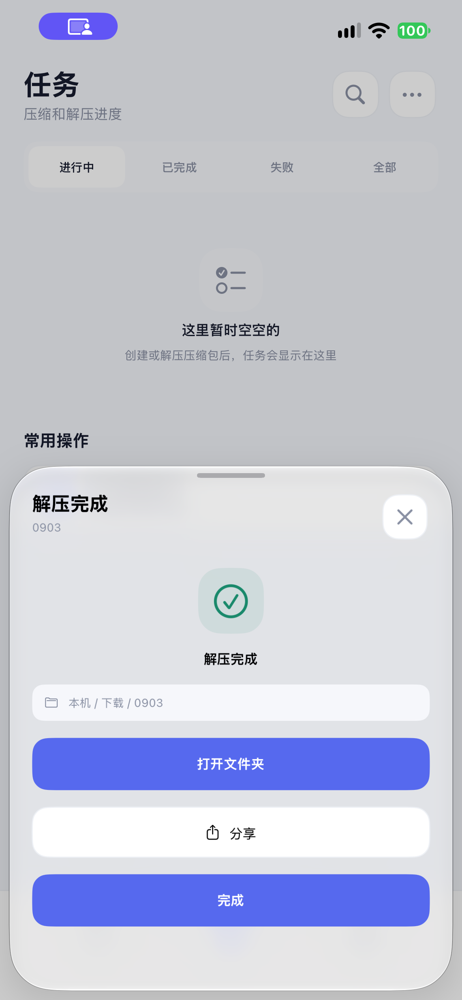
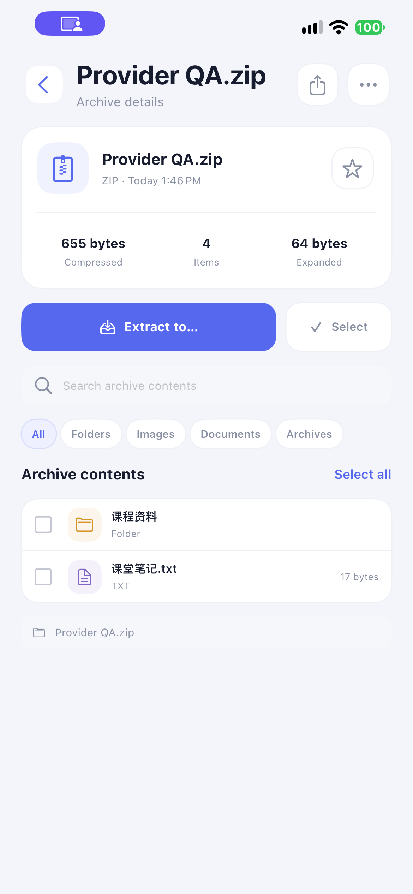
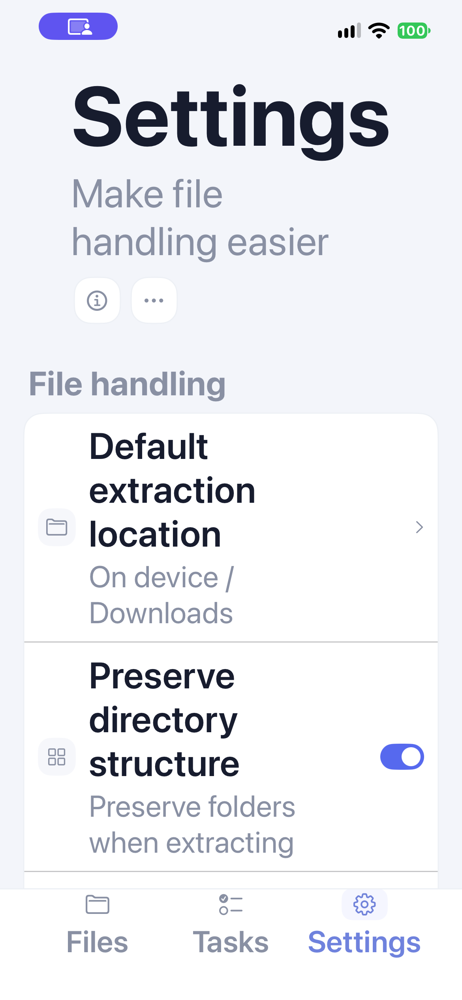
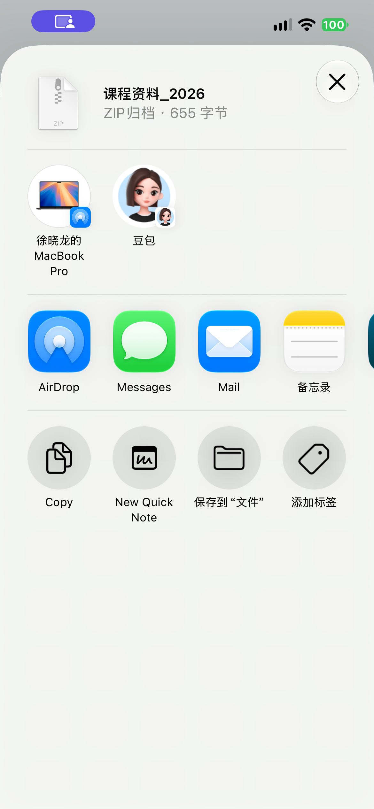

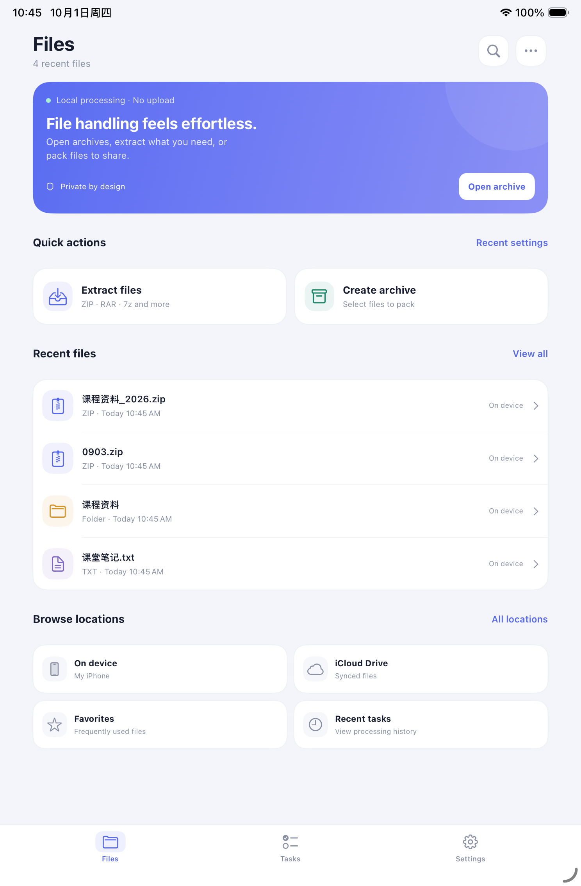
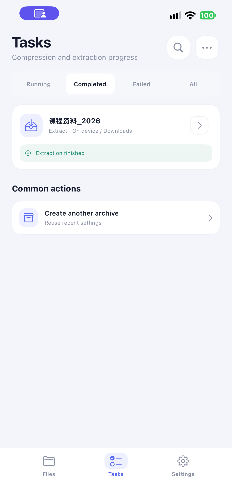
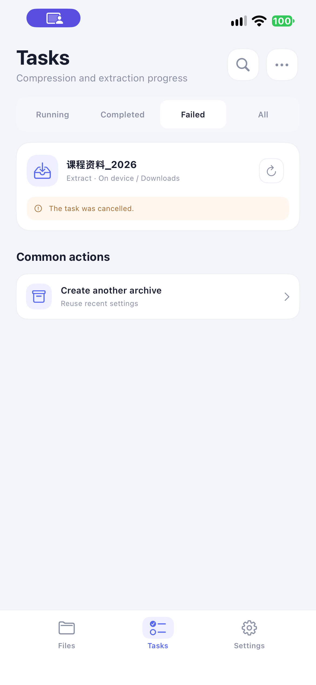
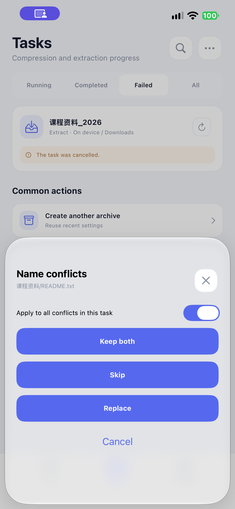
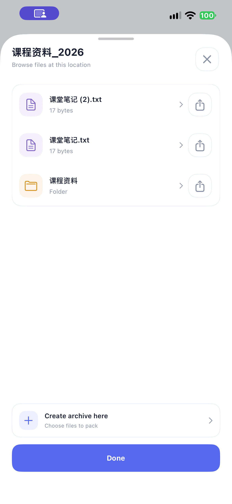